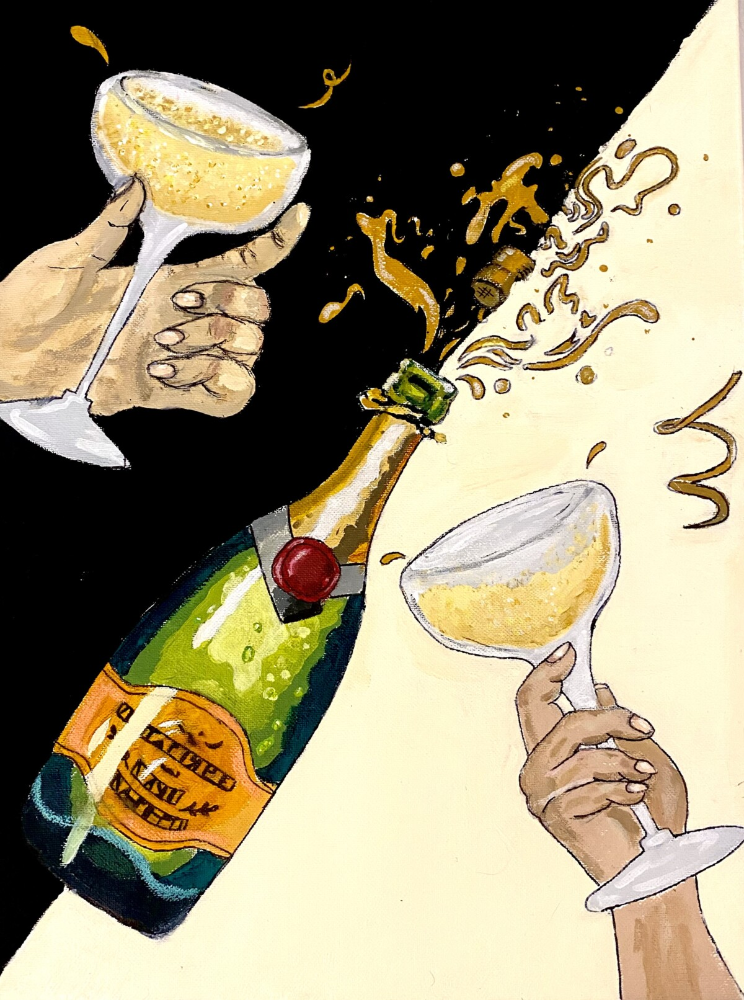

January ’22 Creative Prompt Competition Winner – “Bloom: What does the New Year Mean to You?”
 “Paused Generation” (acrylic on canvas)
‘Paused Generation’is a piece that addresses the separation and celebration that has been a global experience the last few years.
The new year is a difficult time for many because it reminds us all that it’s been another turn around the sun. Whether that year has been filled with joy or sorrow, it has happened. The new year reminded me of how many celebrations and opportunities for connection we’ve lost to covid. I entered the pandemic at the beginning of high school, and now I’m being asked to look forward to what lies beyond. That’s quite strange for me.
This painting symbolizes the small connections we can have with one another even in completely different places. The diagonal black and white represent a cheers to the old us and a toast to the people we will become in the new year. It can also represent two old friends acknowledging each other, even when physical closeness is not possible.
A project by NYAC, an initiative from Mood Disorders Society of Canada